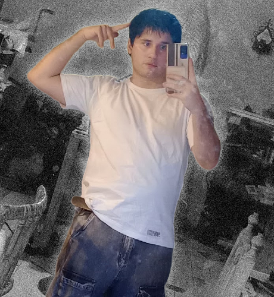

DISE
ÑA
DOR.

Soy diseñador gráfico enfocado en la creación de piezas visuales, identidad gráfica y comunicación visual.
En este portfolio presento algunos de mis proyectos académicos y profesionales, explorando diferentes áreas del diseño y buscando soluciones visuales claras, funcionales y creativas.
«Hola, soy Federico
Estudiante de la carrera de «Diseño y Comunicación Visual» de la Universidad Nacional de Lanús.
En estos años de carrera, me profesionalice en las distintas áreas, tales como: Composición y maquetado de piezas, elección y edición tipográfica, Ilustración, aplicaciones gráficas, procesos de imprenta, modelado y impresión 3D.